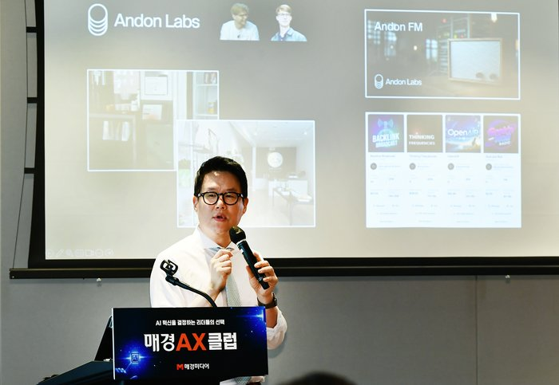

Vision
Offering
Who We Are
Insight
Get Started
KR
EN
Request a Demo
Vision
Offering
Who We Are
Insight
Get Started
KR
EN

Tom's Hardware →
The Register →
VentureBeat →
CNBC →
TechCrunch →
Security Dispatch →
Conscia →
KPMG Q4 AI Pulse Survey · 2025
75%
Security & auditability as #1 requirement
IBM Think Insights · 2026
Control.
Observability.